목차
왜 필요한가
국방 환경 변화, 야지의 어려움, 실증의 빈칸, 시장
무엇을 하려는가
프로젝트 목적, SW 구조, 기술 기반과 역량
지금 어디까지 왔나
5클래스와 모델 비교, 실제 화면, 실제 환경 테스트
검증과 사업화
PM 검증 계획, 성과 목표, 단계적 사업화, 투자 포인트
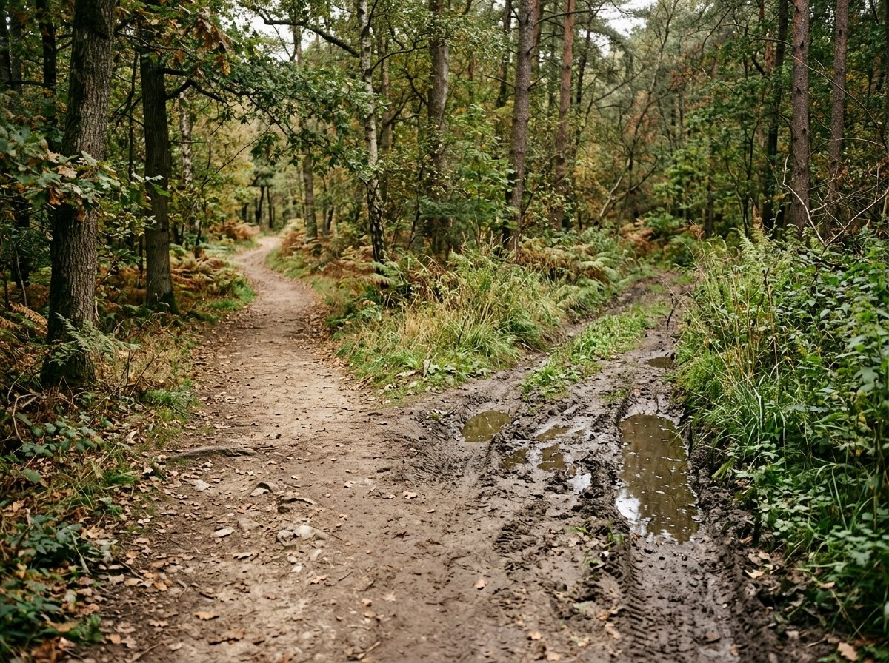
개념 이미지 (AI 생성)국방 환경 변화가 이 SW에 요구하는 것병력 대신 로봇이 임무를 맡으면서 생기는 요구, 그리고 이 프로젝트가 맡는 기능
병력 감축
줄어든 인원 대신 로봇이 투입됨
넓은 구역 경계 작전을 위한 소요 증가
줄어든 인원으로 더 넓은 구역을 경계해야 함
경로 후보 생성·비용 비교
여러 경로를 만들고 지형 비용으로 비교
위험지역 임무 증가
사람이 먼저 들어가기 위험한 임무
UGV로 위험지역을 효과적으로 정찰
사람 대신 로봇이 먼저 들어가 지형을 파악
이동 비용에 따른 Cost Map 생성
5클래스 지형 분류를 통한 이동 비용 계산
유무인복합체계(MUM-T) 확대
사람과 로봇이 함께 작전
운용자가 로봇 판단을 확인
왜 그 길을 골랐는지 보여 줘야 함
판단 결과 화면 표시·로그
경로·비용·위험 구간을 화면과 기록으로
임무 현장은 대부분 야지입니다무엇인지 → 지날 수 있는지 → 어느 길이 나은지를 함께 판단해야 합니다
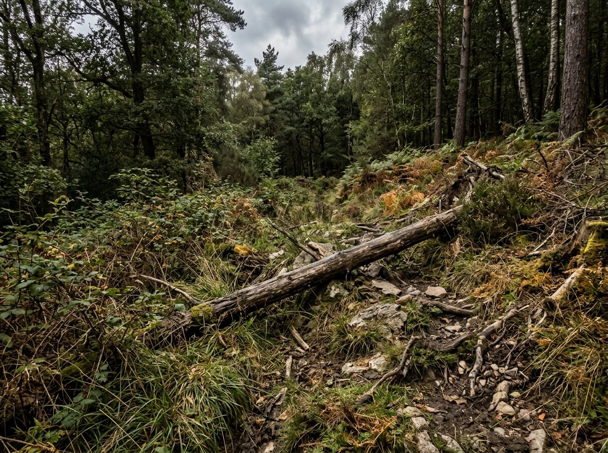
비정형 지형
수풀·경사·쓰러진 나무가 섞이고 상태가 계속 바뀜
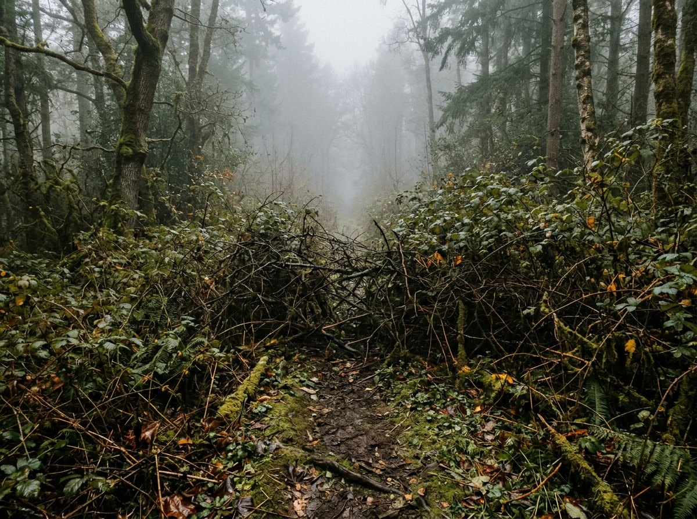
통과 난이도와 미확인 영역
덤불로 막힌 구간, 보이지 않는 곳은 '모름'으로 다뤄야 함
지형 비용을 반영한 경로 선택
갈림길에서 지형별 비용을 비교해 길을 고름
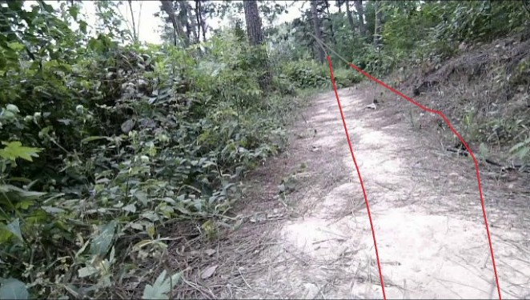
실제 시험 화면
JetRover 카메라로 본 실제 산길
기존 자율항법의 한계
위치 추정·장애물 회피 중심 → 야지에서는 지형별 이동 난이도와 안전성까지 판단해야 함
실증은 시작됐지만, 야지 경로판단은 빈칸입니다2024년 국방서비스로봇 실증 시범사업: 사족보행 로봇을 육군 1개소에 순찰·정찰용으로 공급
이미 검증된 것
다음으로 검증할 것
이 프로젝트- 지형별 이동 난이도
- 센서가 보지 못한 미관측 영역
- 장애물·이동곤란 영역
- 로봇이 지나갈 수 있는 폭
경쟁력은 '판단 알고리즘'으로 옮겨가고 있습니다플랫폼 성능보다 오프로드 인식·이동가능성 판단·경로 계획이 승부처
과거: 플랫폼 중심
- 로봇 몸체의 기동성
- 원격 운용·영상 전송
- 센서·페이로드 확장
앞으로: 판단 알고리즘 중심
- 비정형 지형 인식
- 이동가능성(traversability) 판단
- 지형 비용 기반 경로 계획
해외 사례: DARPA RACER
미국 국방고등연구계획국 프로그램. 비정형 오프로드에서 UGV가 스스로 기동하는 알고리즘 개발에 초점
국방 분야의 조건: 폐쇄망 운용
폐쇄망·제한환경 운용이 중요 → 해외 플랫폼 의존이 아닌, 국내 환경에 적용 가능한 자율항법 AI 알고리즘이 필요
적용 가능한 시장도 커지고 있습니다군용 사족보행 로봇·UGV에 적용 가능한 자율항법 판단 SW 시장 (사업계획서 추정)
세계 적용 가능 시장
2030년까지 +35%국내 적용 가능 시장
2030년까지 +64%프로젝트 목적정식 과제명: 군용 UGV용 AI기반 야지 경로판단 검증용 알고리즘(SW) 개발
목적 공동출원 특허 기술을 '입력 → 판단 → 결과 표시'가 되는 검증 SW로 구현해, 플랫폼 기업 PoC와 군·공공 실증 제안 근거를 확보
이번 과제에서 만드는 것
- 야지 경로판단 검증 SW 1식 (5개 클래스 분할)
- GCS-Saker 화면표시 기능
- SW 등록 (한국저작권위원회)
- 핵심기능 검증 결과보고서
- 참여연구자 연구노트
이번 단계에서 하지 않는 것
- 양산형 로봇 완제품 개발
- 실기체 연동·보행 제어
- 실시간 자율주행 완성
- 군 납품
→ 후속 실증·양산 검토 단계
야지 경로판단 SW의 전체 구조센서 입력부터 결과 확인까지 다섯 단계를 하나의 흐름으로 연결합니다
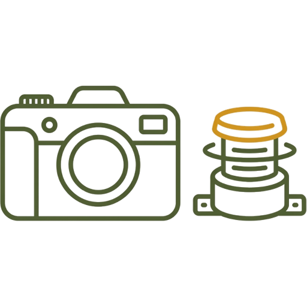
센서 데이터 입력
카메라 영상
LiDAR 정보·TF 처리
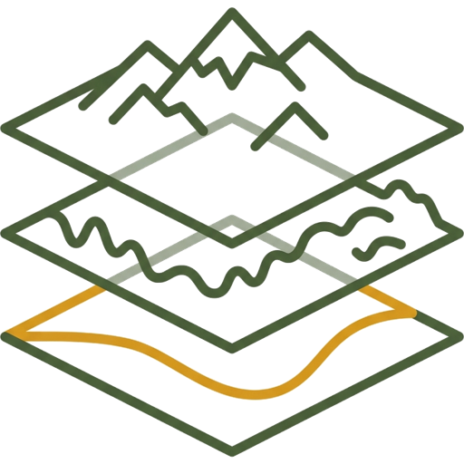
지형 분류
카메라 세그멘테이션
위험도별 5클래스
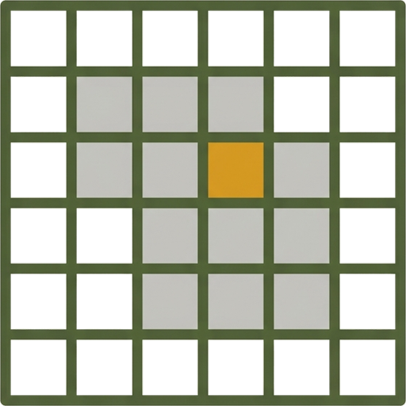
Cost Map
이동가능성을
지도 비용으로 표현
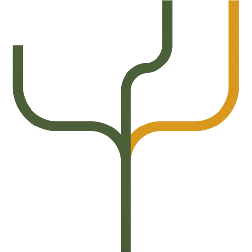
경로 후보 비교
후보 생성과
비용 기반 비교
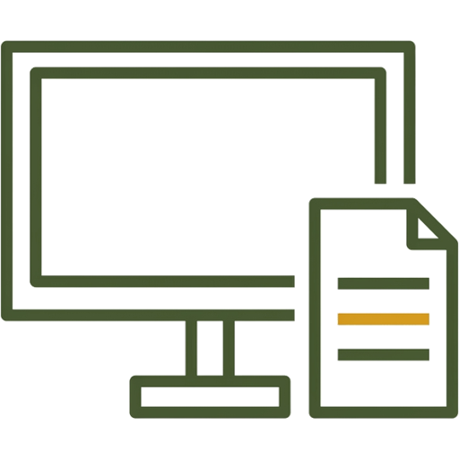
결과 표시·로그
판단 결과·경로 후보
화면 표시와 로그 저장
왜 A4AI인가: 기술 기반과 수행 역량선행 연구와 특허, 군용 관제시스템 경험, 연구 인력
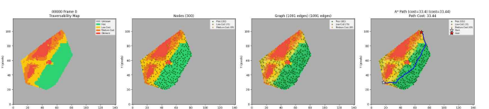
RISE 선행 연구
5클래스 지도 → 그래프 → A* 경로탐색
(데이터셋 기반 선행 결과)
공동출원 특허
국립금오공과대학교 산학협력단·A4AI
10-2026-0029787
3D 포인트 클라우드 기반 이동 가능성 그래프 생성 방법 (출원)
군용 관제시스템 경험
폐쇄망·제한환경 기반 군용 GCS 시제품 구현
군용 다목적 무인관제시스템 개발 주관 (2025, 전주기 방산창업 지원사업)
연구 인력
삼성전자 출신 펌웨어 기술자, AI·데이터 연구인력 참여
센서 처리 → 판단 → 경로 출력 → 시각화까지 수행
위험도별 5클래스와 모델 비교RELLIS-3D 클래스를 이동 판단용 5그룹으로 묶어 MobileNet 계열을 자체 학습
위험도별 5클래스 숫자: 표시용 비용값, 클수록 지나가기 어려움
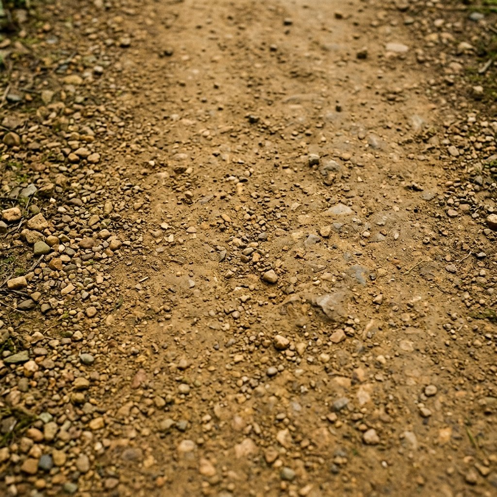
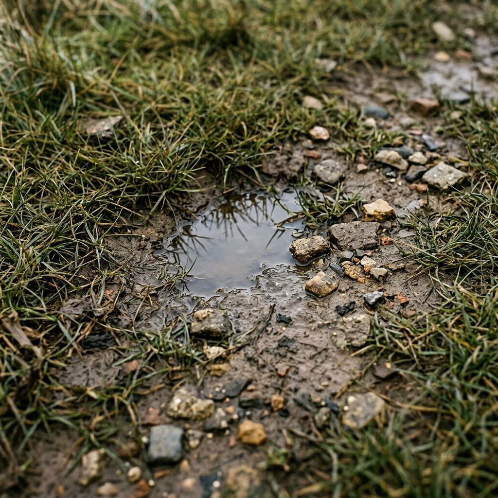
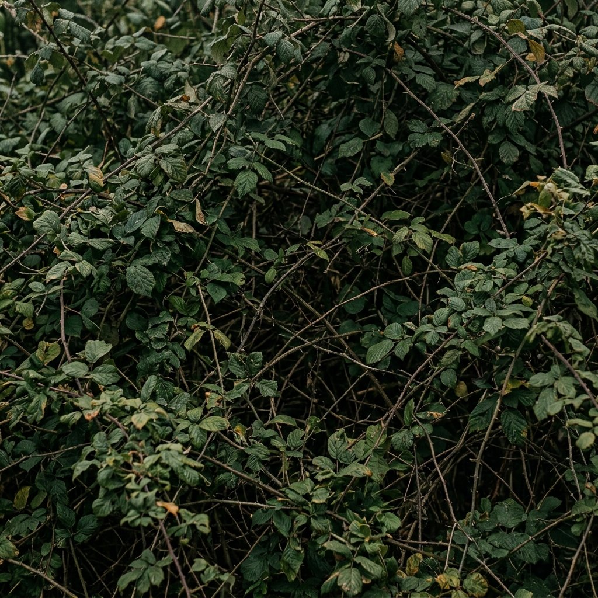
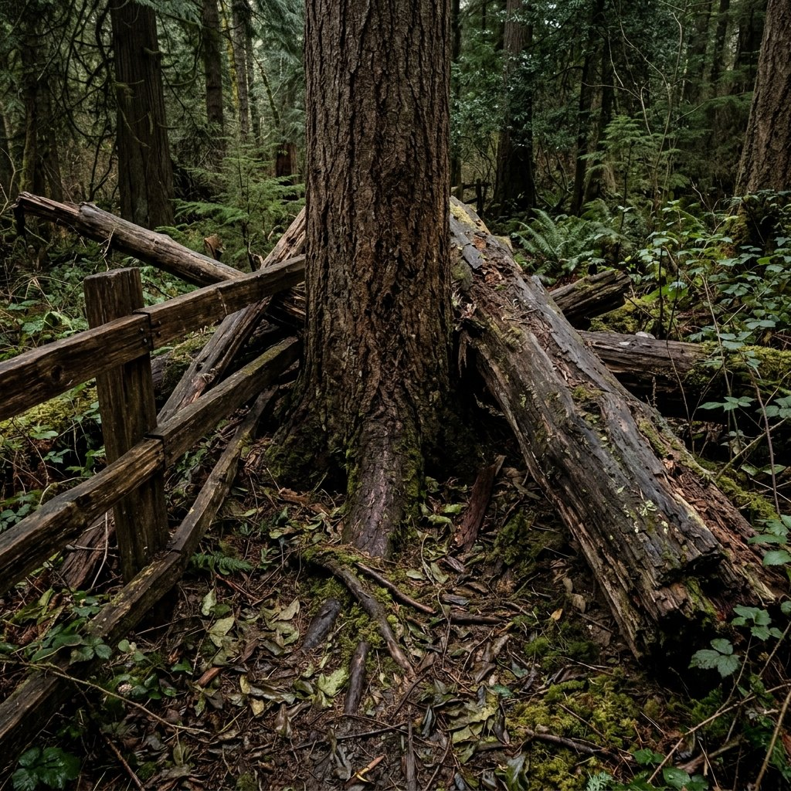
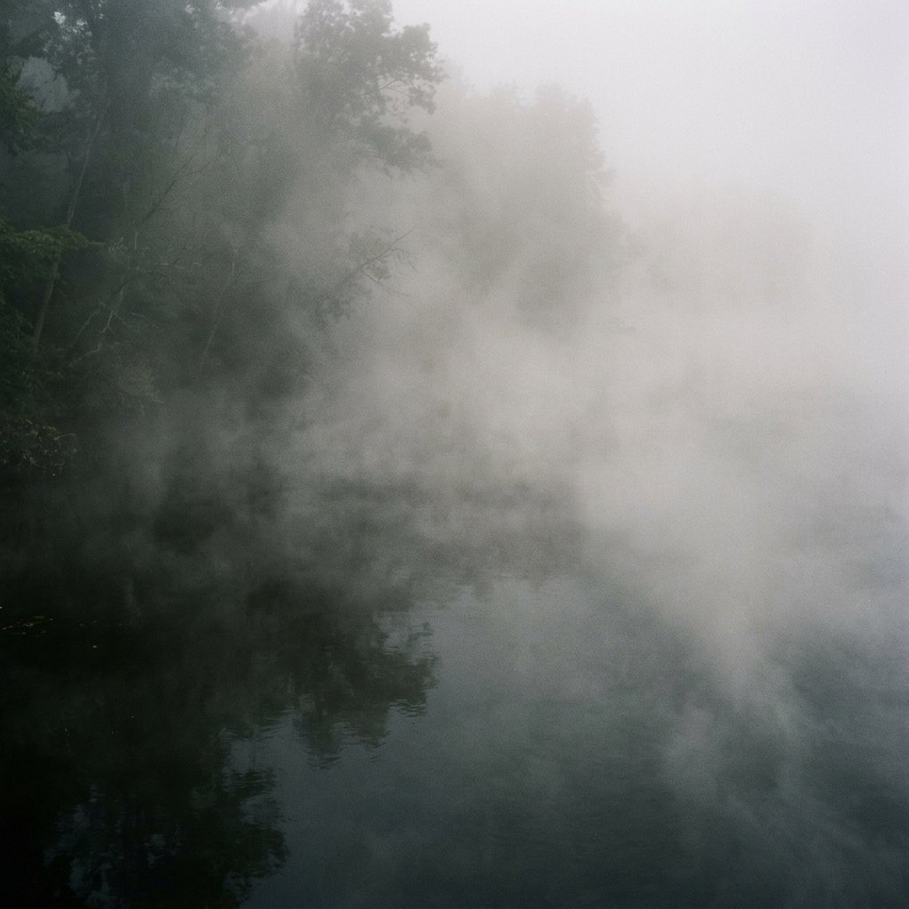
모델 비교 제공 지표표 기준
JetRover 시험 구성과 실제 개발 화면카메라·LiDAR 데이터를 ROS2로 처리하고 Foxglove로 확인
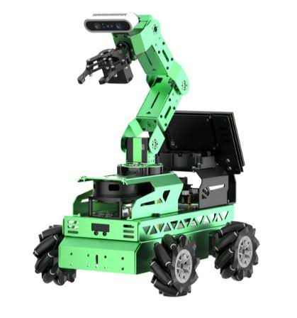
Hiwonder JetRover
탑재 RGB 카메라·LiDAR
ROS2 · TF 처리
Foxglove (개발용)
실제 테스트 영상과 관찰MobileNet 계열(자체 학습) 모델의 실제 동작 · Foxglove 개발 화면 전체
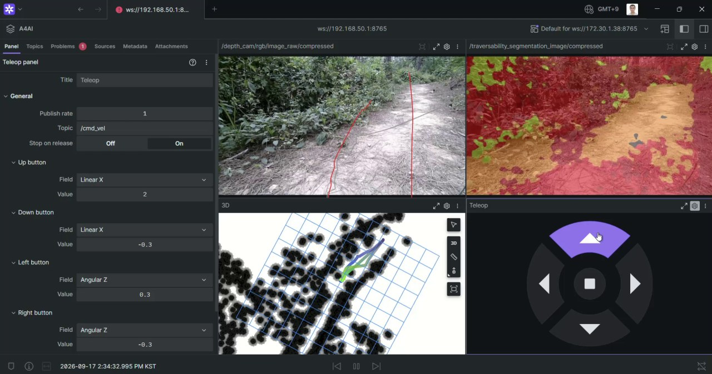
카메라 원본·세그멘테이션·LiDAR 표시가 실제 센서 입력으로 동작
자체 학습 모델 확인 결과 추가적인 개선이 필요
오류 사례 정리, 동일 입력·동일 클래스 기준 정량평가
PM의 개발·검증 계획작업마다 '무엇이 남으면 완료인지' 증빙을 함께 정했습니다
모델 개선
추가 학습 대상 결정, 오류 사례 정리, 같은 조건 재평가
증빙 데이터·클래스 기준, 모델별 지표, 비교 화면
센서 교체
Mid 360S 부착 완료 → ROS2 수신·TF·표시 연동 검증 중 → 재시험
증빙 장착 기록, 토픽 확인, 화면·로그
경로판단 통합
Cost Map·경로 후보 기능 상태 확인과 구현·연결
증빙 입력·지도·경로·비용 비교 결과
최종 검증
시험절차 적용, 야지 시험, SW 품질평가·등록
증빙 시험 결과, 로그·영상, 평가·등록 자료
성과 목표와 시험 기준사업의 공식 성과 목표와 확인 방법
5클래스 판단 정확도
확인 방법
기준 라벨·판정 기준을 적용한 정량평가
전체 평균 처리시간
확인 방법
단일 입력 기준, 입력·분석·결과표시·로그 저장까지
야지 기능구현 시험
확인 방법
야지 3종, 시험절차에 따른 영상·로그·결과
정적·동적 평가 결과 확보
확인 방법
공인기관 또는 전문기관 평가
단계적 사업화 경로이번 과제의 검증 결과가 다음 단계로 넘어가는 근거가 됩니다
핵심기능 검증
검증 SW · 결과보고서
정확도·처리시간 결과
플랫폼 기업 PoC
KRM 등 플랫폼 기업과
적용성 검토
군·공공 실증
실증사업 연계
실증 결과 확보
옵션화·양산 검토
플랫폼 옵션화
공인시험·조달 등록
플랫폼 기업 채널
군용 사족보행 로봇·UGV 플랫폼 기업에 자율항법 옵션 알고리즘 PoC·탑재성 검토 제안
군·공공 실증 채널
정찰·감시, 기지방어, CBRN 정찰, 위험지역 선탐색 등 실증사업 연계
공공·민간 확장
산림·소방·재난 대응, 산업안전, 위험설비 점검 등 험지 이동체
부록 A. 원본 클래스 전체 매핑RELLIS-3D 원본 20개 클래스 → 5개 그룹
Unknown 비용값 -1
void(0), water(6), sky(7)
Free 비용값 0
dirt(1), asphalt(10), concrete(23)
Low-Cost 33
grass(3), puddle(31), mud(33), rubble(34)
Medium-Cost 66
bush(19)
Obstacle 100
tree(4), pole(5), vehicle(8), object(9), building(12), log(15), person(17), fence(18), barrier(27)
부록 B. 모델 지표 상세와 해석 기준
영상 처리시간
모델 항목의 값. 입력·TF·표시·로그를 포함한 전체 시스템 시간 아님
처리율(FPS)
원 자료 열 이름은 '초당 쿼리 수', 값 단위는 FPS
평균 클래스 정확도
원문 명칭 유지. mIoU·과제 판단 정확도와 동일하지 않음
측정 일관성
10.86 ms의 역수는 약 92.1 FPS로 기재값 99.4와 차이. 확인 필요
부록 C. Livox Mid 360S 교체 단계현재 상태: Mid 360S 부착 완료 · 연동 검증 중
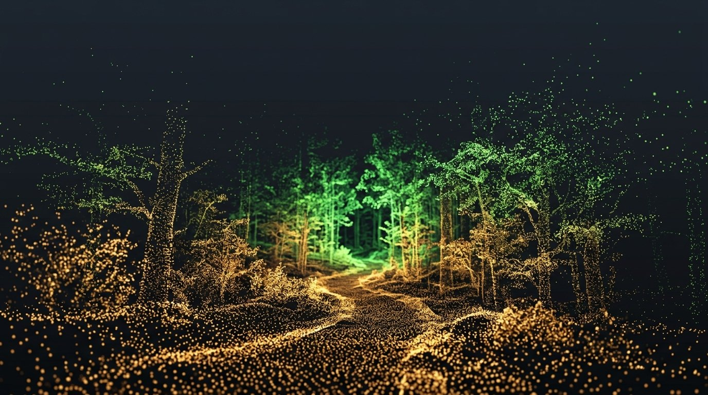
개념 이미지 (AI 생성)센서 도착
Livox Mid 360S 수령
부착 장비 수급
로봇 부착용 장비 확보
부착
JetRover에 Mid 360S 장착
연동 검증
ROS2 수신, TF·표시 점검
재시험
데이터 품질·처리 부하 확인